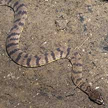
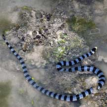
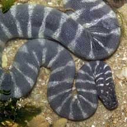
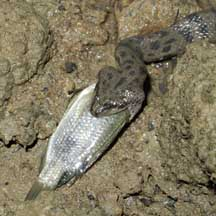
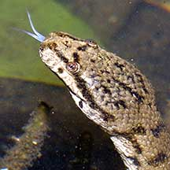

|
|
| snakes text index | photo index |
| Phylum Chordata > Subphylum Vertebrata > Class Reptilia |
| Snakes
on our shores updated Oct 2016
Where seen? Snakes are sometimes seen on many of our shores and mangroves and even swimming in our deeper waters. Some are seasonally more common, others are shy and well camouflaged and thus hard to spot even though they might be quite common. Some terrestrial snakes are also commonly seen near the coast, though they stay firmly on dry land. What are snakes? Snakes are vertebrates like you and me, i.e., they have a backbone and internal skeleton. Some snakes have returned to the sea and live on the shore or even in deeper waters and far out in the ocean. Sea snake features: Snakes on our shores are well adapted to their habitats, some are so well adapted that they can no longer move easily on land. Some, like the Yellow-lipped sea krait (Laticauda colubrina) has a paddle-like tail to swim with. Others, like the Banded file snake (Acrochordus granulatus) have a loose granulated skin to better grasp slippery fish. Like other land snakes, the snakes on our shores have scales. Although some have lost the broad scales that land snakes have along the bottom of their bodies and which are used to grip the surface and move. Without these ventral scales, some sea snakes are helpless on land. Snakes on our shores don't have gills. So they must come up regularly to the surface to breathe. Sea-dwelling snakes usually have nostrils with valves to keep out water, and enlarged lungs which store air so they can stay underwater longer as well as to help in bouyancy control. Some of these snakes can also take in air through the skin. Sometimes confused with eels and other long fishes. Unlike fish, snakes do not have gills. Here's more on how to tell apart sea snakes, eels and eel-like animals. Are our shore snakes dangerous? Snakes that live in the sea include some with the most potent venom. But most sea snakes, including venomous sea snakes, are gentle and will not bite unless provoked. If you leave the snake alone and don't touch it, it will not harm you. What do they eat? Generally, snakes on our shores eat mostly fish. The favourite prey of the Yellow-lipped sea krait (Laticauda colubrina), for example, is eel! But as a group, they eat a variety of prey including crabs, prawns and other animals. Some specialise in a particular kind of prey. What do they drink? A study found that some sea snakes need to drink freshwater and won't drink seawater. Sea snakes may also drink water from the "lens" of freshwater that sits atop saltwater during and after rainfall, before the two have had a chance to mix. That would explain why some seawater lagoons, where the waters are calmer due to protection from reefs, are home to dense populations of sea snakes - the freshwater lens persists for longer periods before mixing into saltwater. The "long-standing dogma" is that sea snakes drink seawater, with internal salt glands filtering and excreting the salt. In fact, the snakes' salt gland may help the snakes with ion balance - moving excess salts from the bloodstream. Full report on the wild shores of singapore blog. Water babies: Most snakes on the shores give birth to live young. But the Yellow-lipped sea krait (Laticauda colubrina) lays eggs on coral reefs. |
 The Dog-faced watersnake can be commonly in our mangroves but are only active after dark. Sungei Buloh Wetland Reserve, Nov 03  The Yellow-lipped sea krait is sometimes seen on our reefs. Pulau Hantu, Apr 06  The Banded file snake is a gentle creature sometimes seen in our mangroves. Pulau Sekudu, Jul 05  Snakes can swallow prey bigger than their heads! Pasir Ris Park, Mar 07 |
|
 Like other snakes, sea snakes and water snakes also have a forked tongue. Sungei Buloh Wetland Reserve, Nov 03 |
 The sea snake has a paddle-shaped tail to help it swim in the water. Sisters Island, Nov 03 |
| Marine
and intertidal snakes on Singapore shores text index and photo index of snakes on this site |
Links
References
|